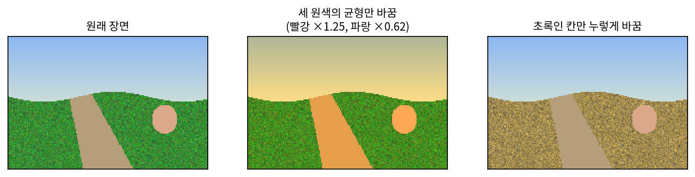
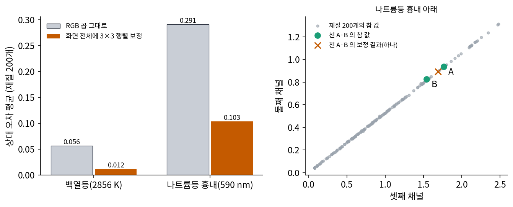
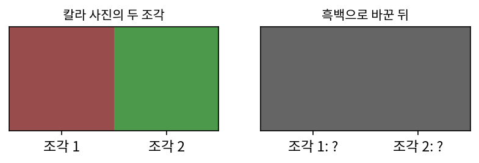
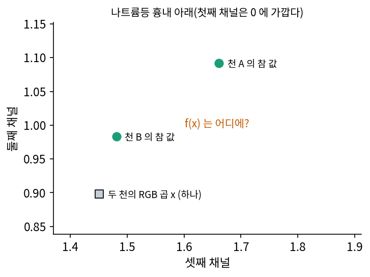
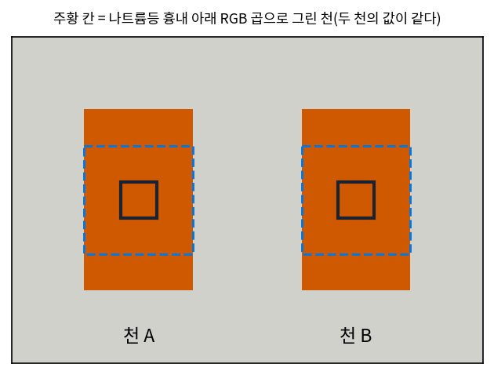

컬러 그레이딩: 화면의 세 숫자를 다른 세 숫자로 바꾸기
천 A 를 백열등 아래 RGB 곱으로 그리면 참 값과 4.5% 쯤 다르고, 나트륨등 흉내 아래서는 14% 다르다. 영화와 게임을 만드는 사람들은 렌더링이 끝난 뒤 화면의 색을 고쳐서 이런 차이를 메워 왔다. 그래픽 연구자 페터스(Christoph Peters)는 2025년 블로그 글에서 RGB 와 스펙트럴 렌더링을 견주며, 실시간 색 보정이 이런 효과의 일부를 흉내 낼 수 있지만 여러 종류의 조명이 섞이면 금방 벽에 부딪힌다고 적었다. 다 그린 화면의 색을 나중에 고치면 줄인 뒤 곱하기의 오차를 어디까지 되찾을 수 있을까?
역사: 미시시피의 초록을 마른 누런빛으로
필름 시절의 색 보정은 현상소에서 했다. 필름을 다시 찍어 낼 때 빨강·초록·파랑 빛의 양을 조절하는 방식이라, 화면 전체에서 세 원색의 균형을 바꿀 수는 있어도 어느 한 색만 골라 바꿀 수는 없었다. 2000년 개봉한 『오 형제여 어디에 있는가(O Brother, Where Art Thou?)』는 마르고 누런 빛깔의 화면을 원했지만, 촬영지 미시시피의 초목은 푸르렀다. 촬영 감독 디킨스(Roger Deakins)는 필름 전체를 스캔해 컴퓨터에서 색을 고친 뒤 다시 필름에 찍는 디지털 중간본(digital intermediate) 방식을 택했다고 전해진다. 작업은 코닥 자회사 시네사이트(Cinesite)가 맡았고 컬러리스트는 프리드(Julius Friede)였다. 이 영화는 처음부터 끝까지 디지털 중간본을 거친 첫 할리우드 장편으로 널리 꼽힌다. 『플레전트빌(Pleasantville)』(1998)이 그보다 먼저 일부 장면에 같은 방식을 썼으므로 「처음」은 「영화 전체」를 붙여야 맞다.

디지털 보정이 퍼지자, 화소마다 세 숫자를 넣으면 고친 세 숫자를 돌려주는 함수를 빨리 계산하는 방법이 필요해졌다. 소니 픽처스 이미지웍스의 셀란(Jeremy Selan)은 2005년 『GPU Gems 2』 24장에서 그 함수를 3차원 표로 미리 만들어 두고 화소마다 한 번 찾아 쓰는 방법을 정리했다. 이런 표를 3D LUT(색 대응표, lookup table)라 부르고, 칸 수를 33 × 33 × 33 처럼 잡는다. 장은 표를 찾는 속도가 색 보정을 몇 단계 거듭했든 같다는 점을 강점으로 들었다.

초록인 칸만 바꾸는 건 사진 앱에서도 손가락 몇 번이면 되잖아요. 2000년에 그게 그렇게 큰일이었어요?

사진 한 장이면 그렇죠. 영화는 1초에 24장, 한 편에 십몇만 장이에요. 그 필름을 모두 스캔해 숫자로 바꾸고, 고치고, 다시 필름으로 찍어야 했어요. 그 과정을 영화 한 편 전체에 처음으로 해 낸 게 이 영화라는 거예요.

현상소 방식으로는 아예 못 하는 일이었네요. 빛의 양 세 개를 바꾸면 화면의 모든 칸이 같은 비율로 바뀌니까요. 하늘만 놔두고 풀만 바꾸려면 칸마다 다른 일을 해야 하고요.

그럼 칸마다 다른 일을 할 수 있게 되면서 뭐든 고칠 수 있게 된 거네요.

칸마다 다른 일을 하지만, 그 일을 정하는 근거는 그 화소의 세 숫자뿐이에요. 세 숫자가 같은 두 칸에는 무슨 일이 생길까요?
3×3 행렬 보정과 하나로 합쳐진 두 천
가장 단순한 보정부터 해 보자. 매끈한 반사율 200개를 지어(시그모이드 둘과 종 모양 하나를 섞은 곡선) 원뿔세포 감도 곡선으로 참 값과 RGB 곱을 구하고, 화면 전체에 같은 3×3 행렬을 곱해 RGB 곱을 참 값에 가장 가깝게 맞췄다(최소 제곱). 이렇게 렌더링이 끝난 화면의 색을 고치는 일을 컬러 그레이딩 (다 그린 화면의 색을 고치는 일 / color grading)이라 한다. 3×3 행렬은 그 가운데 가장 단순한 꼴이고, 3D LUT 는 세 숫자에서 세 숫자로 가는 함수라면 무엇이든 담는다.

| 조명 | RGB 곱의 상대 오차 평균 | 3×3 보정 뒤 |
|---|---|---|
| 백열등 | 0.0608 | 0.0119 |
| 나트륨등 흉내 | 0.3118 | 0.1143 |
백열등 아래에서는 행렬 하나로 오차가 5분의 1 로 주니, 조명이 하나이고 스펙트럼이 매끈하면 화면 전체의 색 보정이 꽤 잘 듣는다. 나트륨등 흉내 아래에서는 3분의 1 남짓만 주는데, 오른쪽 그림을 보면 이 조명 아래 참 값은 재질이 무엇이든 한 직선 위에 있다. 590 nm 둘레의 빛만 있으니 모든 물체가 같은 빛깔이고 밝기만 다르다(둘째와 셋째 숫자의 비가 재질 200개에서 표준편차 0.0082). RGB 곱은 둘째와 셋째 숫자의 비가 표준편차 0.1045 로 흩어져, 원래는 사라져야 할 재질 색을 남긴다. 보정은 빛깔을 직선 쪽으로 모아 줄 수는 있지만, 밝기는 각 재질의 590 nm 반사율이 정하는데 화면의 세 숫자에는 590 nm 반사율이 따로 남아 있지 않다.
천 A·B 는 더 분명하다. 두 천의 RGB 곱은 같은 세 숫자이므로 3×3 행렬이든 33 × 33 × 33 칸짜리 표든, 화소의 세 숫자만 보는 보정은 두 천에 같은 값을 돌려준다. 메타머로 합쳐진 두 색은 그레이딩으로 다시 가를 수 없다. 워드의 미리 환산이 잘 들은 것은 재질의 세 숫자를 만들기 전, 곧 스펙트럼끼리 곱하는 단계에서 조명을 넣었기 때문이다.
화면의 밝기 범위를 줄이는 톤 매핑도 그레이딩의 한 단계다. 햇빛 아래 하늘과 그늘의 밝기 차이는 화면이 낼 수 있는 범위보다 훨씬 넓어서 눌러 담아야 한다. 채널마다 따로 1 에서 자르면 (4, 2, 0.5)인 밝은 주황이 (1, 1, 0.5)가 되어, 빨강과 초록의 비가 2 : 1 에서 1 : 1 로 바뀌고 노랑으로 틀어진다. 게임 업계는 필름의 반응처럼 어두운 끝과 밝은 끝을 부드럽게 꺾는 필믹(filmic) 곡선을 써 왔고, 헤이블(John Hable)이 2010년 게임 개발자 회의(GDC)에서 『언차티드 2』의 HDR(넓은 밝기 범위) 조명을 다룬 강연이 그런 곡선을 게임에 퍼뜨린 것으로 널리 인용된다. 미국 영화 예술 과학 아카데미가 만든 색 관리 체계 ACES 는 2014년 12월 1.0 판이 나왔고(2025년 2.0), 언리얼 엔진은 4.15 판부터 ACES 기준에 맞춘 필믹 톤 매퍼를 기본으로 켠다. 블렌더는 2023년 4.0 판에서 기본 변환을 AgX 로 바꾸며, 밝은 색이 실제 카메라처럼 하양으로 간다는 점을 내세웠다. 어느 쪽이든 세 숫자를 세 숫자로 바꾸는 함수다.
ML에서: 색을 고치는 신경망도 세 숫자에서 시작한다
사진의 색을 신경망으로 고치는 방법에도 같은 한계가 있다. 입력이 화소마다의 세 숫자라면, 화소 하나만 보는 신경망은 아무리 커도 세 숫자를 세 숫자로 바꾸는 함수 하나이므로 3D LUT 가 담을 수 있는 것 이상을 하지 못한다. 이웃 화소와 장면의 모양까지 보면 「하늘 모양이면 대개 파랑」처럼 학습 데이터에서 본 통계로 그럴듯한 색을 짐작할 수 있다. 그래도 그 색은 줄이는 순간 사라진 파장 정보를 되찾은 것이 아니라, 비슷한 모양이 대개 어떤 색이었는지를 쓴 것이다. 같은 세 숫자로 합쳐진 두 천을 이웃을 보는 신경망이 가를 수 있는지는 아래 문제 7에서 따진다.
문제 5. 흑백 사진을 칼라로
칼라 사진의 세 숫자를 평균 내 흑백으로 바꾼다. 조각 1 은 (0.6, 0.3, 0.3), 조각 2 는 (0.3, 0.6, 0.3)이다. (가) 두 조각의 흑백 값은? (나) 흑백 값 하나를 받아 칼라 세 숫자를 돌려주는 표(1D LUT)로 두 조각에 각자의 원래 색을 돌려줄 수 있는가? (다) 흑백 사진을 칼라로 바꿔 주는 앱은 실제로 꽤 그럴듯한 색을 입힌다. 표 하나로는 못 하는 일을 무엇으로 하겠는가?

(가)는 둘 다 1.2 / 3 = 0.4 예요. (나)는 표를 잘 만들면 되지 않을까요? 0.4 에 빨강을 넣고…
조각 2 도 0.4 였죠. 표는 0.4 에 몇 개의 답을 적을 수 있어요?

하나요. 아, 빨강을 적으면 조각 2 가 빨개지고, 초록을 적으면 조각 1 이 초록이 되네요.
(0.5, 0.5, 0.2) 같은 노란 조각도 평균이 0.4 라서 같이 묶여. 숫자 셋을 하나로 줄이면서 버린 두 방향은 표로 못 되찾는 거네. 눈이 31칸을 셋으로 줄일 때 버린 28 방향처럼.

그러면 (다)의 앱은 어디서 색을 가져올까요?

그 조각의 흑백 값 말고 다른 걸 봐야겠죠. 둘레의 모양이요. 하늘 모양이면 파랑, 잎 모양이면 초록… 그건 칸 하나만 보는 표로는 안 되고요.

그럼 그 색은 사진에 원래 있던 색이 아니라 그런 모양이면 대개 그런 색이었다는 경험이네요. 친구가 잃어버린 우산 색을 「너라면 검정이겠지」로 맞히는 거랑 같아요. 맞을 때가 많아도 확인한 건 아니죠.
문제 6. 하나로 합쳐진 두 천에 가장 좋은 보정
나트륨등 흉내 아래 RGB 곱으로 그린 천 A·B 는 같은 세 숫자 x = (0.0001, 0.8984, 1.4510)를 받는다. 참 값은 yA = (0.0002, 1.0920, 1.6615), yB = (0.0002, 0.9830, 1.4813)이다. 보정 함수 f 는 x 에 출력 하나 f(x)를 돌려준다. (가) 두 천의 오차 제곱의 합 |f(x) − yA|² + |f(x) − yB|² 을 가장 작게 하는 f(x)와 그때의 값을 구하라. (나) 표의 칸을 65 × 65 × 65 로 늘리면 이 최솟값이 줄어드는가? (다) 같은 조명 아래 재질의 세 숫자를 미리 환산해 두면 두 천의 세 숫자는 어떻게 되는가?

(가)는 둘 중 하나를 맞히면 그 천의 오차는 0 이니까, f(x) = yA 로 하면 되지 않을까요?
그때 합이 얼마인지 계산해 봐요.
yA 와 yB 의 거리가 0.2105 니까 합은 0.2105² ≈ 0.0443. 반대로 yB 를 골라도 같고. 그런데 두 점까지의 거리 제곱 합이면 한쪽 끝보다 가운데가 작을 것 같은데. f(x) 로 미분해서 0 을 놓으면 2(f − yA) + 2(f − yB) = 0, f = (yA + yB)/2 야.

가운데면 (0.0002, 1.0375, 1.5714)이네. 두 거리가 다 0.1053 이라서 합이 2 × 0.1053² ≈ 0.0222. 한쪽을 맞힐 때의 절반이구나. 거리의 제곱 합은 |yA − yB|²/2 보다 작아질 수 없어.
(나)처럼 표를 촘촘하게 하면요?
칸을 늘려도 x 는 한 점이라 표에서 그 점에 적을 수 있는 출력은 하나뿐이에요. 0.0222 아래로는 못 내려가요. 3×3 행렬도, 신경망이라도 x 만 받으면 같은 한계고요.
(다)는 화면을 고치는 게 아니라, 화면을 그리기 전에 손을 쓰는 거예요.

미리 환산하면 두 천의 세 숫자가 (0.6796, 0.6772, 0.6760)과 (0.6281, 0.6096, 0.6027)으로 달라져요. 환산할 때 31칸 반사율을 조명과 곱한 뒤 줄였으니까요.

같은 세 숫자가 되기 전에 조명을 넣으면 갈라지고, 된 뒤에는 무엇을 해도 가운데까지가 최선이네요. 순서가 전부예요.
문제 7. 1×1 합성곱만 쓰는 보정 신경망
렌더링한 화면을 받아 색을 고치는 신경망을 만든다. 신경망 1 은 1×1 합성곱(화소 하나의 세 숫자만 보는 층)만 쌓았고, 신경망 2 는 3×3 합성곱(이웃 아홉 칸을 보는 층)을 쌓았다. 화면에는 같은 회색 배경 위에 천 A 와 천 B 가 3 × 5 칸씩 떨어져 걸려 있고, 나트륨등 흉내 아래 RGB 곱으로 그려 두 천의 칸 값이 같다. (가) 신경망 1 은 3D LUT 와 무엇이 같은가? (나) 신경망 2 는 두 천의 한가운데 칸에 같은 값을 내는가? (다) 두 천을 가르게 하려면 신경망에 무엇을 더 줘야 하는가?

(가)는 1×1 합성곱은 화소 하나의 세 숫자로 새 세 숫자를 만드니까 함수 하나네요. 층을 쌓아도 화소 하나 안에서만 섞이고요. 표로 적으면 3D LUT 예요.
(나)는 이웃을 보니까 다르게 낼 수 있지 않을까? 천 A 는 왼쪽에 있고 천 B 는 오른쪽에 있잖아.
합성곱 층은 화면의 어느 자리에서나 같은 커널을 써요. 그럼 「왼쪽에 있다」는 것을 어떻게 알죠?

아, 커널이 자리를 모르네요. 두 천 한가운데 칸의 이웃 아홉 칸은 둘 다 천 칸뿐이라 값이 같고요. 그럼 출력도 같아요.
가장자리 칸은요?
가장자리도 바깥이 같은 회색 배경이라, 천 A 의 왼쪽 가장자리와 천 B 의 왼쪽 가장자리가 같은 이웃을 봐요. 화면을 옮겨도 같은 답이 나오는 성질 그대로네요. 평행이동해도 출력이 같이 옮겨 갈 뿐이에요.
그럼 (다)는요?
칸 값 말고 두 천이 다르다는 정보를 넣어야죠. 엔진이 알고 있는 재질 번호 같은 걸 한 채널로 더 주거나, 조명을 바꾼 화면을 하나 더 주거나요.
문제 3(사진 한 장, 사진 두 장)에서 조명을 바꾼 사진을 더 줘야 했던 거랑 같아요. 입력에 없는 차이는 어떤 층을 쌓아도 출력에 못 만들어요.